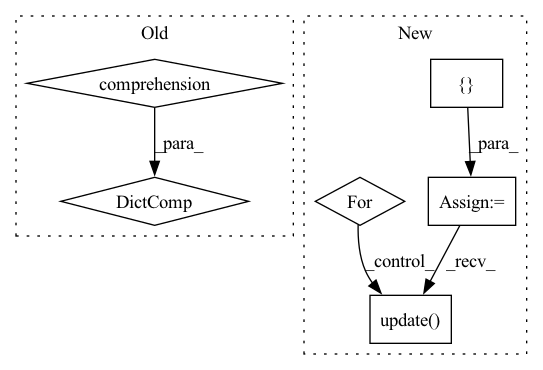

Pattern ID :23967

Before Change
def _get_dirs(self):
if self.dir_cache is None:
self.dir_cache = {
hf_file.rfilename: {"name": hf_file.rfilename, "size": 0 or None, "type": "file"} // TODO(QL): add size
for hf_file in self.repo_info.siblings
}
def _open(
self,
path: str,
After Change
def _get_dirs(self):
if self.dir_cache is None:
self.dir_cache = {}
for hf_file in self.repo_info.siblings:
// TODO(QL): add sizes
self.dir_cache[hf_file.rfilename] = {
"name": hf_file.rfilename,
"size": None,
"type": "file",
}
self.dir_cache.update(
{
str(d): {"name": str(d), "size": None, "type": "directory"}
for d in list(PurePosixPath(hf_file.rfilename).parents)[:-1]
}
)
def _open(
self,
path: str,
In pattern: SUPERPATTERN
Frequency: 3
Non-data size: 6
Instances
Fragment ID: 74529235
Project Name: huggingface/datasets
Commit Name: bf2ba9923d9133bd6e0be2c4ec20e422fc32f08a
Time: 2022-03-01
Author: mariosasko777@gmail.com
File Name: src/datasets/filesystems/hffilesystem.py
M Class Name: HfFileSystem
N Class Name: HfFileSystem
M Method Name: _get_dirs(1)
N Method Name: _get_dirs(1)
M Parent Class: AbstractFileSystem
N Parent Class: AbstractFileSystem
M File Name: src/datasets/filesystems/hffilesystem.py
N File Name: src/datasets/filesystems/hffilesystem.py
M Start Line: 40
M End Line: 43
N Start Line: 40
N End Line: 55
'>
Before Change
macro = f1_score(y_true=y_true, y_pred=y_pred, average="macro")
reverse_labels_mapping = {v: k for k, v in labels_mapping.items()}
per_label = {
reverse_labels_mapping[i]: f1score
for i, f1score in enumerate(
f1_score(
y_true=y_true,
y_pred=y_pred,
labels=list(labels_mapping.values()),
average=None,
)
)
}
return {"micro": micro, "macro": macro, "per_label": per_label}
After Change
y_true=y_true, y_pred=y_pred, average="macro"
)
per_label = {}
for label, p, r, f, _ in zip(
labels_mapping.values(),
*precision_recall_fscore_support(
y_true=y_true,
y_pred=y_pred,
labels=list(labels_mapping.values()),
average=None,
),
):
per_label.update(
{f"{label}_precision": p, f"{label}_recall": r, f"{label}_f1": f}
)
return {
"precision_macro": macro_p,
"recall_macro": macro_r,
'>
Fragment ID: 74529234
Project Name: recognai/rubrix
Commit Name: d28941e3c2a7e69e34358b2e3a2494f7b5c1e78b
Time: 2021-11-24
Author: david@recogn.ai
File Name: src/rubrix/server/tasks/text_classification/metrics.py
M Class Name: F1Metric
N Class Name: F1Metric
M Method Name: apply(2)
N Method Name: apply(2)
M Parent Class: PythonMetric
N Parent Class: PythonMetric
M File Name: src/rubrix/server/tasks/text_classification/metrics.py
N File Name: src/rubrix/server/tasks/text_classification/metrics.py
M Start Line: 30
M End Line: 76
N Start Line: 30
N End Line: 87
'>
Before Change
def get_user_flags(flags, flags_def):
return {key: getattr(flags, key) for key in flags_def}
def prefix_metrics(metrics, prefix):
return {
After Change
)
)
def get_user_flags(flags, flags_def):
output = {}
for key in flags_def:
val = getattr(flags, key)
if isinstance(val, ConfigDict):
output.update(flatten_config_dict(val, prefix=key))
else:
output[key] = val
return output
'>
Fragment ID: 74529229
Project Name: young-geng/cql
Commit Name: cd9beb2b0654e98a105c4a69358237c958cc35f9
Time: 2021-09-20
Author: young.gengxy@gmail.com
File Name: SimpleSAC/utils.py
M Class Name: AnonimousClass
N Class Name: AnonimousClass
M Method Name: get_user_flags(2)
N Method Name: get_user_flags(2)
M Parent Class:
N Parent Class:
M File Name: SimpleSAC/utils.py
N File Name: SimpleSAC/utils.py
M Start Line: 63
M End Line: 63
N Start Line: 65
N End Line: 73